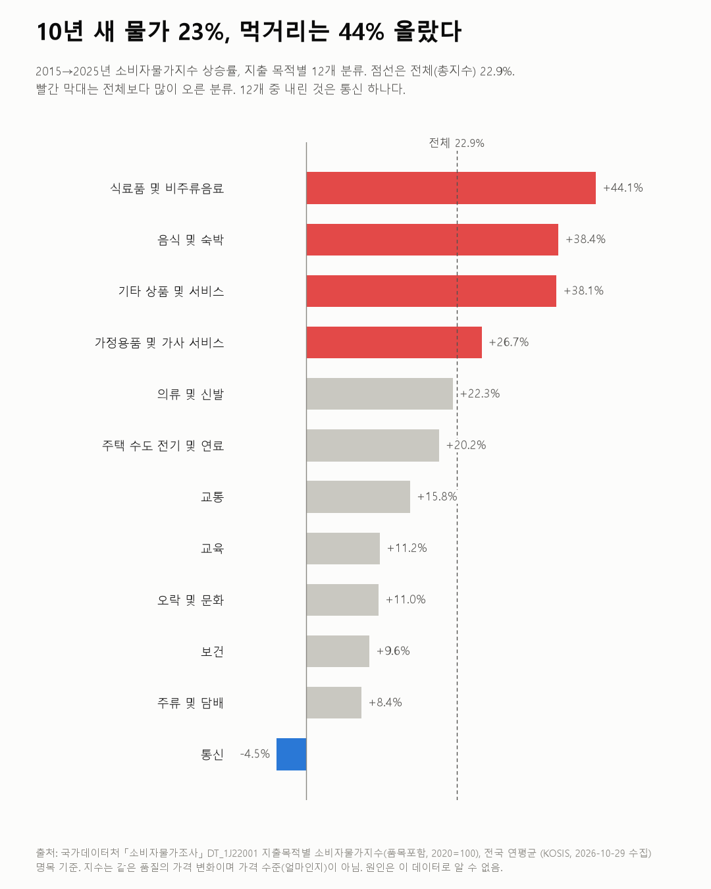
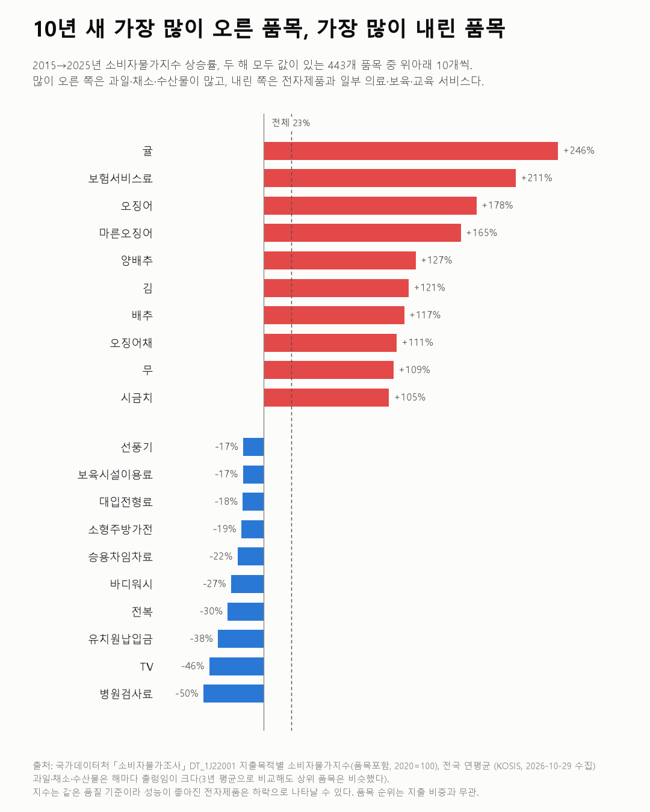

소비자물가조사
10년 새 물가 23%, 먹거리는 44% 올랐다
소비자물가지수 2015~2025

질문
2015년부터 2025년까지 10년 동안 무엇이 가장 많이 올랐고, 무엇이 덜 오르거나 내렸나? 전체 물가와 비교하면?
사용 데이터와 출처
| 데이터 | 출처 | 쓰임 |
|---|---|---|
| 지출목적별 소비자물가지수(품목포함, 2020=100) (KOSIS DT_1J22001) | 국가데이터처 「소비자물가조사」 | 전국 연평균 지수: 총지수, 12개 분류, 품목 458개 |
- 상승률 = 2025년 지수 ÷ 2015년 지수 − 1.
- 품목은 두 해 모두 값이 있는 443개만 비교했다. 나머지 15개는 그사이 새로 생겼거나 빠진 품목이다.
- 지수는 같은 품질의 물건·서비스 가격이 얼마나 변했는지를 나타낸다. 가격 수준(한 개에 얼마인지)은 알 수 없다.
- 수집일: 2026-10-29 (KOSIS 오픈API).
- 교차 확인: 총지수 상승률 22.9%는 국가데이터처가 공표한 연도별 등락률(2016~2025년)을 곱한 누적값 22.9%와 같다.
인사이트
1. 10년 동안 전체 물가는 22.9% 올랐다. 같은 기간 식료품 및 비주류음료는 44.1%, 음식 및 숙박(외식 포함)은 38.4% 올랐다. 먹거리 두 분류가 12개 중 1, 2위다.
2. 12개 분류 중 내린 것은 통신 하나다(−4.5%). 교육(11.2%), 오락 및 문화(11.0%), 보건(9.6%), 주류 및 담배(8.4%)는 전체보다 덜 올랐다.
3. 가장 많이 오른 품목은 대부분 과일·채소·수산물이다. 귤(+246%), 오징어(+178%), 마른오징어(+165%), 양배추(+127%), 김(+121%), 배추(+117%) 순이다. 상위 10개 중 9개가 먹거리다. 나머지 하나는 보험서비스료(+211%)다.
4. 내린 품목에는 전자제품과 일부 의료·보육·교육 서비스가 있다. 병원검사료(−50%), TV(−46%), 유치원납입금(−38%), 보육시설이용료(−17%), 대입전형료(−18%) 등이다.

한계
이 데이터로 말할 수 없는 것
- 두 해만 비교했다. 과일·채소·수산물은 해마다 값이 크게 출렁인다. 그래서 2015~2017년 평균과 2023~2025년 평균으로도 비교했다. 오징어, 보험서비스료, 귤, 배 등 상위 품목은 거의 같았다. 다만 정확한 순위는 기준 연도에 따라 바뀔 수 있다.
- 같은 품질 기준이다. TV처럼 성능이 좋아진 제품은 지수에서 하락으로 나타날 수 있다. 실제로 사는 값이 그만큼 내렸다는 뜻은 아닐 수 있다.
- 품목 순위는 지출 비중과 무관하다. 귤이 가장 많이 올랐어도 가계 지출에서 차지하는 비중은 작다. 지출 비중을 반영한 값은 분류별 지수(인사이트 1·2)를 보는 게 맞다.
- 명목 기준이다. 같은 기간 임금이 얼마나 올랐는지와는 비교하지 않았다. 다른 통계가 필요하다.
- 원인은 말하지 않는다. 작황, 환율, 제도 변화(예: 보육·교육 지원) 등 이유는 이 데이터로 알 수 없다.
- 보험서비스료는 품목 정의를 따로 확인하지 못했다. 어떤 보험의 무엇을 재는 품목인지는 통계설명자료로 확인이 필요하다.
전제 기록
데이터를 보기 전에 적어둔 것, 그리고 보고 나서 바꾼 것
- 전제 기록(premises)(데이터를 받기 전에 작성)를 그대로 따랐다.
- 3년 평균 비교는 결과를 본 뒤, 신선식품의 출렁임 때문에 추가한 확인이다. 결론은 바뀌지 않았다.